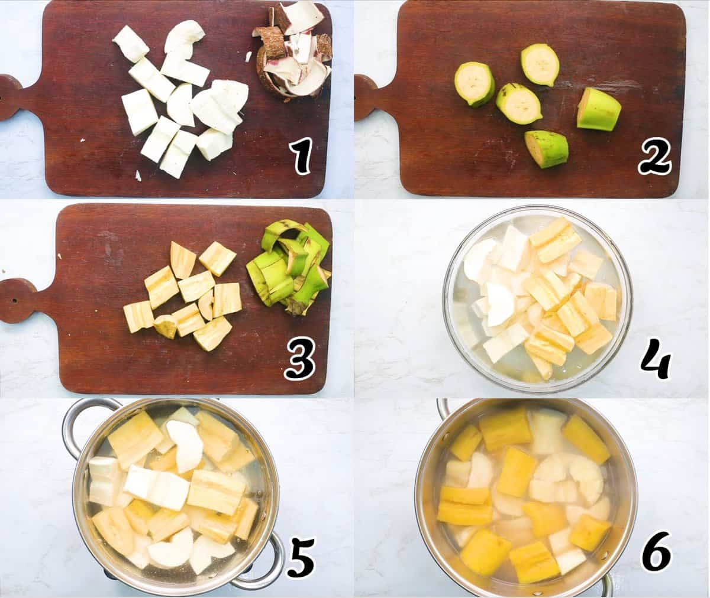
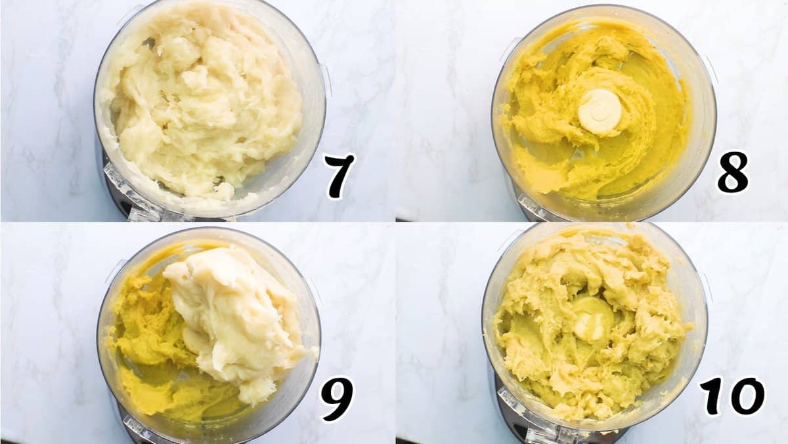
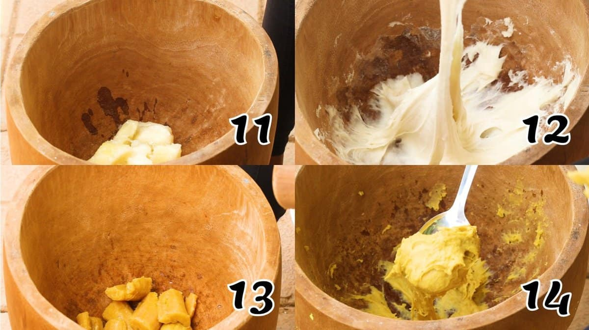
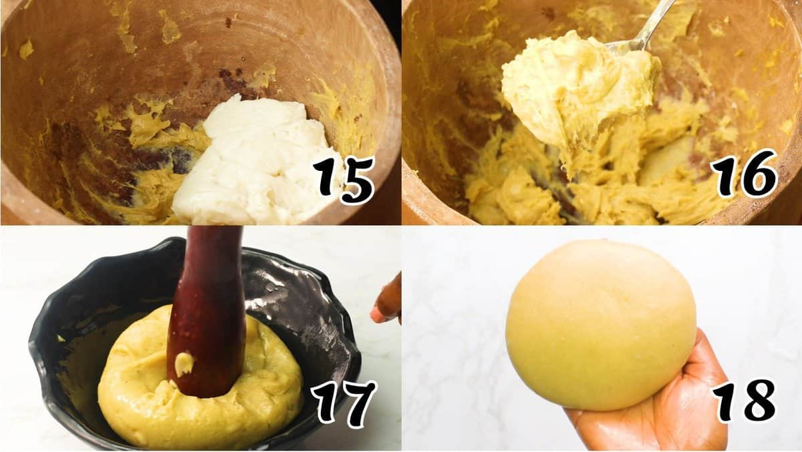

Fufu

Fufu is a dish, that is commonly eaten by ghanian people, and other people from west Africa.
Fufu is the most favorite dish eaten by ghanian people, it consists of cassava roots
and there are different soups with which you can eat fufu with.
Ingredients
Steps

- Peel and slice the cassava and Plantain with a knife unto medium-size
pieces, take out the cassava's core and the plantain tiny seeds, and rinse (Photo 1-4)
- Cook them - Place the pieces in a saucepan, cover with water, and cook
over medium heat. Boil for 30 minutes until fork-tender. Drain the water(Photo 5-6)

- Blend - Add the cooked plantain and cassava to a food processor and
blend. Use a spoon to move it around as necessary to ensure even blending.
Add water by the spoonful as needed until you achieve desired texture. It
should be soft and stretchy. (Photos 7-10)
- Smooth - Turn it onto a wet plate or bowl and fold it into itself until it is
smooth.


Alternative to Electric Appliances
- Mash - Using a mortar and pestle, start by pounding the plantain into a
smooth dough and set it aside. Then do the same for the cooked cassava.
(Photos 11-14)
- Mix - Combine the plantain and the cassava. (Photos 15-16)
- Mold the mixture into the portion size of your choice and place it in
serving bowls. (Photos 17-18)
- Serve - The fufu is ready to serve with the soup of your choice.